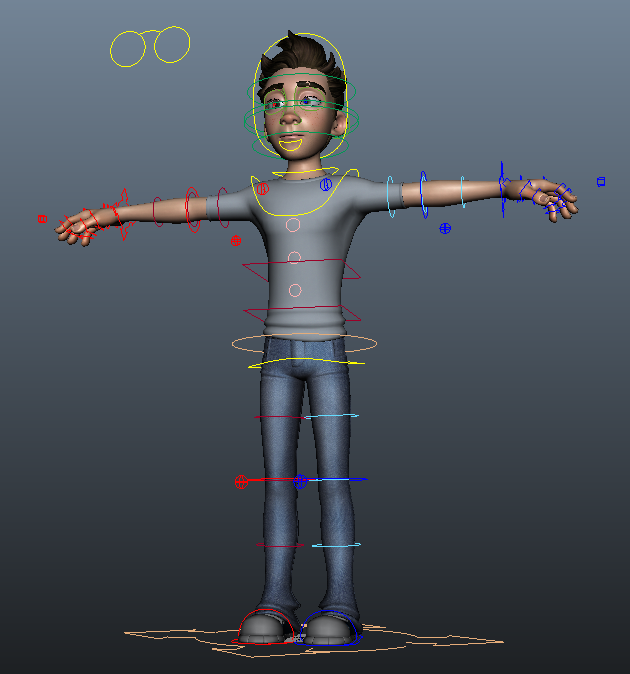

Character Picker
... o cómo hacer un sinóptico corporal para Autodesk Maya.
César Sáez - http://cesarsaez.me
Hoy hablaremos sobre...
- Sinópticos
- Python
- Maya APIs (cmds, openmaya, pymel)
- Qt (PyQt, PySide)
- Designer
- Graphics View Framework
- Conclusiones
- Preguntas
Sinóptico?
Interfaz gráfica mediante la cual 'no-riggers' interactúan con los rigs en producción, centro de operaciones.
La víctima: Mario

Los números de Mario:
- 115 controles anim. cuerpo.
- 46 controles anim. faciales.
- 790+ atributos animables.
- 1950+ nodos.
- ...
+control → +gestión
Según la complejidad del rig, llega un punto en que resulta poco eficiente seleccionar los controles de animación desde el visor 3D.
Camera View + Graph Editor + Picker
✌
Referencias...

animSelector, Luca Fiorentini

Unreal Engine 4, Epic Games

Frozen, Walt Disney Animation Studios

Frozen, Walt Disney Animation Studios
Interfaz gráfica → Programación
Maya Embedded Language (MEL) o Python?
Python!
- Lenguaje de uso general.
- Licencia de código abierto.
- Baterías incluídas (std library).
- Sintaxis muy limpia, código legible.
- Extensa documentación.
- ...
Qt Bindings
- PyQt - GNU General Public License v3, commercial
- PySide - LGPL version 2.1 (incluído en Maya >= 2014)
Volveré sobre esto más adelante...
Python en Maya
- cmds: acceso a comandos MEL en python.
- openmaya: acceso a la API de maya (bajo nivel).
- pymel: implementación 'idiomática' de python en Maya.
Python (cmds) → Maya → Qt
cmds/picker_v1.py
from maya import cmds # importamos cmds
w = cmds.window(title="Picker", width=300) # nueva ventana
cmds.columnLayout(adjustableColumn=True) # layout vertical
cmds.text(label="char: mario_rig", height=30) # nombre personaje
cmds.button(label="Head", height=30, backgroundColor=(0.9, 0.7, 0.1),
command=lambda _: cmds.select("mario_rig:mario_ac_cn_head")) # botones
...
cmds.showWindow(w) # abrimos ventana

Datos != Lógica
Datos (pseudo código)
{
"filetype": "picker_data",
"version": 0.1,
"charname": "",
"color_table": {color_key: (r, g, b), ...},
"anim_table": {anim_key: "node_name", ...},
"selectors": [{"name": "",
"targets": (anim_key, ...),
"color": color_key,
}, ...],
}Datos ↔ xxx.json
import json
file_path = "path/to/file.json"
# Importar desde json
with open(file_path) as fp:
data = json.load(fp)
# Exportar a json
with open(file_path, "w") as fp: # abrimos en modo escritura!
json.dump(fp, data)cmds/picker_v2.py
import json
from maya import cmds
def open_picker(data, w=300, h=30):
w = cmds.window(title="Picker", width=w) # nueva ventana
cmds.columnLayout(adjustableColumn=True) # layout vertical
cmds.text(label="char: " + data["charname"], height=h) # nombre personaje
for btn in data["selectors"]: # loop selectores
targets = [data["anim_table"].get(x) for x in btn["targets"]]
cmds.button(label=btn["name"], height=h,
backgroundColor=data["color_table"].get(btn["color"]),
command=lambda _, t=targets: cmds.select(t)) # creamos boton
cmds.showWindow(w) # abrimos la ventana
json_file = r"W:\slides\slides_picker\code\cmds\data.json" # fichero json
with open(json_file) as fp:
d = json.load(fp) # importamos datos
if d.get("filetype") == "picker_data" and d.get("version") >= 0.1: # validamos
open_picker(d)Limitaciones:
- Diseño de la GUI mediante código.
- Opciones de posicionamiento (layout) limitado.
- Conjunto de elementos (widgets) limitados.
- No es posible usar imágenes/iconos.
- Dificultad con interfaces dinámicas.
Alternativas?
Qt, code less...
Qt es un framework multiplataforma para desarrollar interfaces gráficas en C++, Maya utiliza internamente Qt para dibujar su GUI.
Python (*PySide) → Qt ← Maya
*Asumiremos PySide como Qt binding de aquí en más...
Designer
.../autodesk/maya2014/bin/designer

1. dummy.ui → dummy.py
# file: pyside-uic.py
import sys
from pysideuic import compileUi
def convert(ui_file):
output_file = ".".join(ui_file.split(".")[:-1]) + ".py"
with open(output_file, "w") as fp:
compileUi(ui_file, fp, False, 4, False)
if __name__ == "__main__" and len(sys.argv) == 2:
convert(sys.argv[1])
mayapy pyside-uic.py dummy.ui2. Maya MainWindow
# file: qt_utils.py
from PySide.QtGui import QMainWindow # qt widget
from shiboken import wrapInstance # parte de lib PySide
from maya.OpenMayaUI import MQtUtil # utilidades Qt maya
def get_anchor():
ptr = MQtUtil.mainWindow() # puntero a la ventana de maya (c++)
return wrapInstance(long(ptr), QMainWindow) # instancia QMainWindow desde ptr
1 + 2 ↴
from PySide.QtGui import QMainWindow # ventana genérica Qt
from dummy import Ui_MainWindow # ui convertido
from qt_utils import get_anchor # maya mainwindow
class Picker(QMainWindow): # extendemos clase QMainWindow
def __init__(parent):
super(Picker, self).__init__(parent)
self.ui = Ui_MainWindow()
self.ui.setupUi(self) # transferimos botones
picker = Picker(parent=get_anchor()) # creamos dialogo
picker.show() # abrimos dialogo
Signals & Slots
Mecanismo que nos permite implementar los 'callbacks' de la GUI.
- Signals: Los widgets Qt emiten señales advirtiendo un evento.
- Slots: Funciones que se ejecutan al recibir la señal.
designer/picker.py
from PySide.QtGui import QDialog
from maya import cmds
from qt_utils import get_anchor
from dummy import Ui_MainWindow
class Picker(QMainWindow):
def __init__(self, parent, data):
super(Picker, self).__init__(parent)
self.ui = Ui_MainWindow()
self.ui.setupUi(self)
# señales
for k, v in data["anim_table"].iteritems():
if hasattr(self.ui, k):
getattr(self.ui, k).clicked.connect(lambda target=v: cmds.select(target))
self.ui.select_all.clicked.connect(
lambda target=data["anim_table"].values(): cmds.select(target))
json_file = r"W:\slides\slides_picker\code\cmds\data.json"
with open(json_file) as fp:
d = json.load(fp)
if d.get("filetype") == "picker_data" and d.get("version") >= 0.1:
picker = Picker(parent=get_anchor(), data=d)
picker.show()Limitaciones:
- Botones rectangulares.
- Layout absoluto/estático.
- Diseño "hardcodeado" en la lógica.
Alternativas?
Graphics View Framework
(canvas)
"Un gran poder conlleva una gran responsabilidad."
Ben Parker
QGraphicsScene
Superficie 2D que contiene QGraphicsItems (sistema coordenadas).
QGraphicsView
Vista mediante la cual observamos la escena (cámara).
QGraphicsItem
Líneas, rectángulos, elipses, polígonos, imágenes, texto, etc.
Designer?
- Programar un editor utilizando el propio framework.
- "Parsear" fichero vectorial (svg, eps).
- Utilizar el viewport de Maya para dibujar la interface.
- ...

Maya → xxx.json
import json
from maya import cmds
data = {"filetype": "picker_data", "version": 0.2,
"color_table": {...},
"anim_table": {...},
"selectors": list()}
for each in cmds.ls(sl):
cmds.select(each + ".vtx[0:]")
d = {"name": each, "target": (each, ),
"points": cmds.xform(q=True, t=True)}
data["selectors"].append(d)
with open("W:\slides\slides_picker\code\canvas\dummy.json", "w") as fp:
json.dump(data, fp)canvas/picker.py
class Polygon(QtGui.QGraphicsPolygonItem):
...
class Picker(QtGui.QGraphicsView):
def loadData(self, data):
self.scene().clear()
for d in data["selectors"]:
p = Polygon.fromPoints(d["points"])
p.name = d["name"]
p.color = [int(x * 255)
for x in data["color_table"].get(d["color"])]
p.targets.extend([data["anim_table"].get(x) for x in d["targets"]])
p.setFlag(QtGui.QGraphicsItem.ItemIsSelectable, True)
self.scene().addItem(p)
def mouseReleaseEvent(self, event):
super(Picker, self).mouseReleaseEvent(event)
targets = [y for x in self.scene().selectedItems() for y in x.targets]
self.select(targets, int(event.modifiers()))
self.scene().clearSelection()
...Limitaciones?
Conclusiones
+control → +gestión
La complejidad del rig nos "obliga" a ofrecer alternativas al viewport 3D.
Sinópticos
Maya no cuenta con una herramienta nativa para realizar sinópticos, pero podemos programar la nuestra.
cmds
Los sinópticos son interfaces gráficas avanzadas y plantean retos a los comandos nativos de Maya.
Qt bindings
Podemos sortear las limitaciones de Maya utilizando Qt mediante librerías de Python (PySide, PyQt).
cmds < Qt (designer) < Qt (canvas)
Nada es gratis, +flexibilidad → +trabajo.
Preguntas?
GRACIAS
César Sáez - http://cesarsaez.me